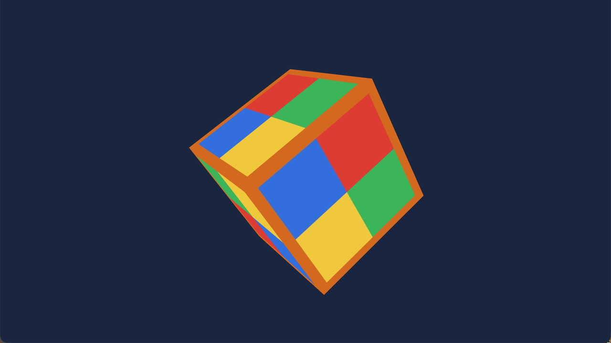
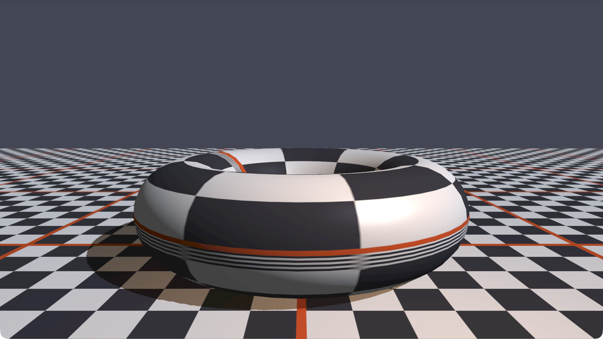
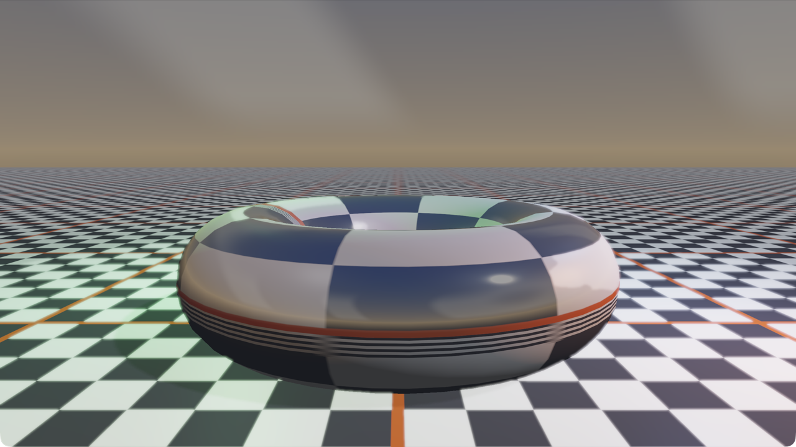

C++17 · OpenGL ES 3.0
把桌面版引擎移植到 OpenGL ES。
每个 GL 资源都有 RAII 封装，每次 GL 调用都经过 GLCall 检查，
13 个示例各自只讲一种渲染技术，现在通过 EGL 运行在 GLSL ES 3.00 上。

引擎内容
与桌面版一样的所有权模型，以及让它跑在 ES 上的移植改动。
全面 RAII
program、buffer、VAO、texture、cubemap、framebuffer 都由析构函数释放；禁止拷贝，允许移动。
调用检查
所有 GL 调用都经过 GLCall，Debug 构建下出错会打印 file:line call error code 并立即中断。
GLSL ES 3.00
桌面写法的 shader 源码在编译前自动改写为 #version 300 es 并注入精度限定符。
双后端
运行时可切换真实 OpenGL ES 后端与无窗口 Null 后端，并统计每帧绘制数据。
13 个示例
从硬编码三角形到程序化玫瑰，每个示例只增加一种能力，不重写前面的代码。
无窗口测试
相机数学与 OBJ 解析可在没有 GL 上下文的情况下做单元测试，CI 强制执行覆盖率门槛。
示例截图
参考渲染；ES 移植版已在 Ubuntu 22.04 + Mesa llvmpipe 上复现，MSAA 4× 由 EGL 配置决定。





四条命令完成构建
需要 CMake ≥ 3.16 与支持 C++17 的编译器；GLFW 和 glm 会自动拉取。
构建、测试并运行
git clone https://github.com/UnmetDecade/Class-OpenGL-ES.git
cd Class-OpenGL-ES
cmake -S . -B build -DCMAKE_BUILD_TYPE=Debug
cmake --build build -j
ctest --test-dir build --output-on-failure
./build/13_rose